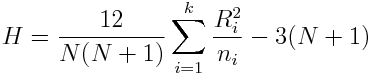

Statistics > Nonparametrics > Kruskal-Wallis Test
This utility performs calculations for the Krustal-Wallis Test,
which is a non-parametric test that uses ranks of sample data from three
or more independent populations to test the null hypothesis that
the independent samples come from populations with the same distribution.
The null hypothesis H0 of a claim is that the samples
come from populations with the same distribution (the population
medians are all equal).
The alternative hypothesis H1 is that the samples come
from populations with different distributions (the population
medians are not all equal).
Let k be the number of samples, and
N be the total number of observations in all k samples combined.
Let ni be the size of sample i.
The k samples are
combined into one and then ranked, with the smallest sample given rank 1,
second rank 2, etc. If two or more samples are tied, their ranks are
averaged. Let Ri be the sum of ranks for sample i.
The test statistic is

The test uses an approximation by a Chi-square distribution with k - 1
degrees of freedom and computes the right-tailed p-value and critical value.
To use the utility, you must provide at least three samples, each with at least
five observations (if a sample of fewer than five observations is used,
a note indicating the presence of small samples will be shown).
- To include a column in the analysis, select the column name is the
Select the column to be included in the analysis: list and click
the Add to list button. The column will be added to the
Responses list. To remove a column from the Responses
list, select it and click the Remove from list button.
-
Click the Clear Input List button to clear the input list.
- Provide the significance level of the test (between 0 and 1).
- Click the OK button to perform the computation. The
results will be displayed in the log window.